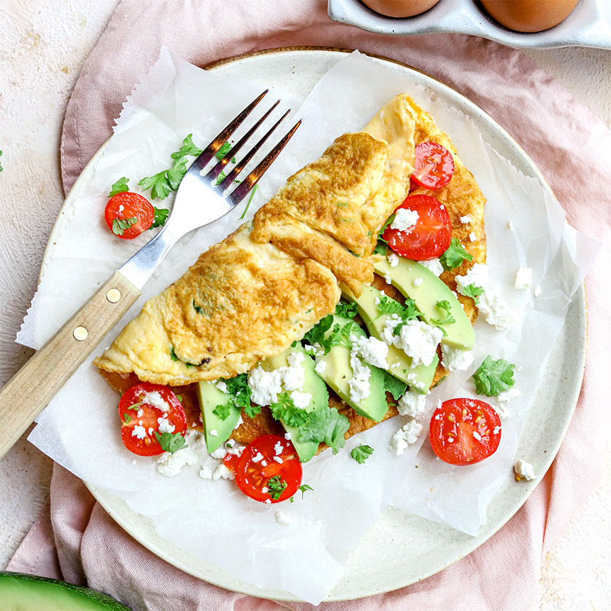

Ingrediënten:
3 eieren
1 eetlepel amandelmelk
1 klontje boter
25g feta
halve avocado
1 eetlepel pesto
3 cherrytomaatjes
Voedingswaarde:
Energie 460 kcal
Vet 3,4g
Koolhydraten 43g
Waarvan suikers 51g
Vezels 60g
Eiwit 16,1g
Zout 1,89g
Berijdingswijze:
1.Klop de eieren los met een garde samen met amandelmelk en een snuf peper en zout.
2.Verhit een koekenpan en laat daar de boter in smelten.
3.Giet vervolgens het eimengsel erin. Ongeveer 1-2 minuten later strooi je hier de helft van de peterselie op.
4.Snijd ondertussen de avocado in reepjes en de tomaatjes doormidden.
5.Leg de omelet op een bord.
6.Verkruimel de feta eroverheen.
Omelet met avocado